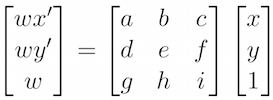

Project Seven A: Image Warping and Mosaicing
CS 194-26: Computational Photography | Krishna Parashar
Background: Homographies
In this project we want to change the perspective of images for a the novel application of taking a series of adjacent images and converting them into a seamless panorama. To do this we take advantage of a linear algebra techniques to calculate a homography which is a fancy way of saying the matrix we need to transform the coordinates way have to to find where they should go. We start by taking some photographs, and then we manually define correspondence points between the two images (we need at least 4 to make this work, more if we want a nicer transformation). We then compute the following to get our homography matrix. We use least squares to compute the value for a, b, c, d, e, f, g, and h, where i is 1 - our scale factor.
Implementation: Image Rectification
After computing the Homography matrix, I tested it out by rectifying (making rectangular) some images that I took that were at an angle. This is done by manually setting the correspondence points to something that is rather rectangular and then morphing the image towards that.
Here is how the rectified images look:
Holstee Manifesto

Original |

Rectified |
Graph Theory

Original |

Rectified |
Implementation: Image Mosaicing
Now that we know the homography and warping works, we are ready to warp the images and blend them together to make a panorama. We blend these images together using a simple weighted average.
Sunset

First Image |

Second Image |

Sunset Panorama
The View from the Thames

First Image |

Second Image |

London Panorama
The View from the Campanile

First Image |

Second Image |

Campanile Panorama
What I Learned
I used to simply take for granted the panorama stitching feature in Lightroom and on my phone. Now I still will, but now it is immensely cooler to know how those images are combined together.